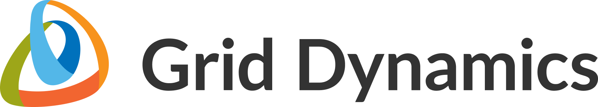

About / CV / Resume
Artem Koziar

Team and Tech Lead
Front-end Software Engineer
Date of Birth: September 26, 1984
Marital status: married, three daughters
Current location: Ukraine, Kyiv 💛💙 (relocatable)
Email: <koziar.artem@gmail.com>
Phone: +38-067-731-76-48
🚀 Goals for the next 5 years:
- Business level of responsibility (C-level);
- IronMan Competition.
About
Professional Summary:
- Experience: 20 years in IT, 10 years in front-end technologies, 5 years with React.
- Role: Front-end Software Engineer, Team and Tech Lead.
- Industry Experience: Grammarly, Ciklum, Grid Dynamics, Innovecs, Luxoft, among others.
Key Achievements:
- Leadership: Effectively led teams, managed technical decisions, and coordinated cross-team efforts.
- Innovation: Designed and implemented headless CMS architecture; developed decentralized financial instruments.
- Mentoring: Passionate about teaching, mentoring, and public speaking, fostering a culture of communication and growth.
- Business Orientation: Focus on delivering results and working with people, with experience in business management.
Technical Skills:
- Front-end Technologies: JavaScript (ES5, ES6, ES7), TypeScript, React, AngularJS (1, 2+), Redux, MobX, NextJS.
- Back-end Technologies: NodeJS (Express), GraphQL, Docker, Kubernetes.
- Testing: Karma, Jasmine, Jest, Cypress, Protractor.
- d Services: AWS, Firebase, Azure.
- DevOps: CI/CD, Terraform, GitLab, GitHub.
- Blockchain: Web3, Tezos, Ethereum, IPFS.
- Other: HTML, CSS, SASS, Bootstrap, Material UI.
Experience:

February 2023 — Present
Position: Tech Lead, UI Engineering
Company: Grid Dynamics
Responsibilities:
Technologies: Hygraph, React, NextJS, TypeScript, GraphQL, Azure, CI/CD, Docker, GitHub, Vercel.
Position: Tech Lead, UI Engineering
Company: Grid Dynamics
Responsibilities:
- Designed and implemented a headless CMS architecture.
- Led and managed the CMS team, overseeing technical decisions on Hygraph data structures and the main app architecture using the NextJS framework.
- Coordinated technical efforts between web, mobile, and CMS teams to ensure seamless integration and synchronization.
- Developed numerous migration scripts to transfer data from the old CMS to the new system.
- Conducted extensive research and proof of concept (POC) experiments to identify optimal solutions and technologies.
Technologies: Hygraph, React, NextJS, TypeScript, GraphQL, Azure, CI/CD, Docker, GitHub, Vercel.
December 2021 — December 2022 (1 year)
Position: Tech Lead & Delivery Manager
Company: QuipuSwap, Madfish.Solution
Responsibilities:
Technologies: Web3, React, TypeScript, Tezos, Ethereum, IPFS, Cypress, TSLint, NodeJS, NextJS, NestJS, CI/CD, Docker, GitHub, Digital Ocean.
Position: Tech Lead & Delivery Manager
Company: QuipuSwap, Madfish.Solution
Responsibilities:
- Designed and maintained project architecture while addressing technical debt.
- Organized and managed the code review process, ensuring code quality control.
- Developed critical components of the project, contributing to its core functionality.
- Shared best practices and facilitated the learning process within the team.
- Transformed and reorganized commands for improved efficiency.
- Motivated and led teams, overseeing the front-end technical department.
- Fostered a culture of communication within the company, including 1-on-1s, Personal Development Plans (PDPs), retrospectives, and other Scrum processes.
- Established cross-team communication channels.
- Taught best practices in both technical and people management.
- Developed decentralized financial instruments (DeFi).
Technologies: Web3, React, TypeScript, Tezos, Ethereum, IPFS, Cypress, TSLint, NodeJS, NextJS, NestJS, CI/CD, Docker, GitHub, Digital Ocean.
December 2020 — December 2021 (1 year)
Position: Principal Front-end Engineer
Company: Anyword, Ciklum
Responsibilities: Support current teams and help to create a product quickly and efficiently. Front-end architecture. Code review. Technical support.
Technologies: React, JavaScript, TypeScript Webpack, CSS-in-JS, Cypress, Jasmine, ESLint, Prettier
CI/CD, Docker, Circleci.
Position: Principal Front-end Engineer
Company: Anyword, Ciklum
Responsibilities: Support current teams and help to create a product quickly and efficiently. Front-end architecture. Code review. Technical support.
Technologies: React, JavaScript, TypeScript Webpack, CSS-in-JS, Cypress, Jasmine, ESLint, Prettier
CI/CD, Docker, Circleci.
April 2020 — December 2020 (9 months)
Position: Senior Front-end Engineer
Company: Cordial
Responsibilities: Developing and leading a new segment of the product, leading, inspire, share knowledge, and best practices to the front-end team.
Technologies: React, Redux, JS+TS, Webpack, CSS-in-JS, Redux-Saga, Redux-form, Jasmine, ESLint, Prettier
CI/CD, Docker, Terraform, Jenkins.
Position: Senior Front-end Engineer
Company: Cordial
Responsibilities: Developing and leading a new segment of the product, leading, inspire, share knowledge, and best practices to the front-end team.
Technologies: React, Redux, JS+TS, Webpack, CSS-in-JS, Redux-Saga, Redux-form, Jasmine, ESLint, Prettier
CI/CD, Docker, Terraform, Jenkins.

November 2019 — April 2020 (6 months)
Position: Team & Tech Lead
Company: Ummanu, Innovecs
Responsibilities: Lead of a feature team
and front-end technical department as well.
People management: One-on-ones, Personal development plan, annual review.
Team management: SCRUM-team activities such as grooming, planning, retrospective. Building a cross-functional team. Introduce the best front-end engineering practices.
Technologies: React, Redux, JavaScript, Webpack, CSS-in-JS, Redux-Saga, Redux-form, Jasmine, ESLint, Prettier, Material UI.
CI/CD, Docker, Terraform, Jenkins.
Position: Team & Tech Lead
Company: Ummanu, Innovecs
Responsibilities: Lead of a feature team
and front-end technical department as well.
People management: One-on-ones, Personal development plan, annual review.
Team management: SCRUM-team activities such as grooming, planning, retrospective. Building a cross-functional team. Introduce the best front-end engineering practices.
Technologies: React, Redux, JavaScript, Webpack, CSS-in-JS, Redux-Saga, Redux-form, Jasmine, ESLint, Prettier, Material UI.
CI/CD, Docker, Terraform, Jenkins.

November 2018 — November 2019 (1 year)
Position: Software Engineer
Company: Grammarly
Responsibilities: Development & Support Proofit-feature in Grammarly-editor
(A/B testing, logging, analysis). Create architecture for new front-end tools
and implement them. Support back-end developers in learning front-end tools.
Technologies: React, Redux, TypeScript, Functional & Reactive Programming (FRP), Webpack, SASS, Redux-saga, Redux-form, Focal, Cypress, Jasmine, Istanbul, ESLint, Prettier, Material UI.
CI/CD, Docker, Terraform, GitLab.
Position: Software Engineer
Company: Grammarly
Responsibilities: Development & Support Proofit-feature in Grammarly-editor
(A/B testing, logging, analysis). Create architecture for new front-end tools
and implement them. Support back-end developers in learning front-end tools.
Technologies: React, Redux, TypeScript, Functional & Reactive Programming (FRP), Webpack, SASS, Redux-saga, Redux-form, Focal, Cypress, Jasmine, Istanbul, ESLint, Prettier, Material UI.
CI/CD, Docker, Terraform, GitLab.

July 2015 — November 2018 (3 years 5 months)
Position: Senior Frontend Engineer
Company: Kantar Consulting, Ciklum
Responsibilities: Performer, R&D Lead, Team Lead Successor, Scrum master, Branching masters, Mentor
Leadership & work with company culture and values.
Building a cross-functional teams. Scaled Agile Framework (SAFe). DiSC. Spiral Dynamic. Public Speaking.
Technologies: AngularJS (1, 2+), Webpack, SASS, Babel, Jade, Karma, Jasmine, Istanbul, JSCS, ESLint, Bootstrap
Position: Senior Frontend Engineer
Company: Kantar Consulting, Ciklum
Responsibilities: Performer, R&D Lead, Team Lead Successor, Scrum master, Branching masters, Mentor
Leadership & work with company culture and values.
Building a cross-functional teams. Scaled Agile Framework (SAFe). DiSC. Spiral Dynamic. Public Speaking.
Technologies: AngularJS (1, 2+), Webpack, SASS, Babel, Jade, Karma, Jasmine, Istanbul, JSCS, ESLint, Bootstrap
March 2015 — July 2015 (5 months)
Position: Senior Web Developer
Company: Deutsche Bank, Luxoft
Responsibilities: Performer, Mentor
Technologies: AngularJS, Grunt, SASS, JSHint, JSCS, Bootstrap
Position: Senior Web Developer
Company: Deutsche Bank, Luxoft
Responsibilities: Performer, Mentor
Technologies: AngularJS, Grunt, SASS, JSHint, JSCS, Bootstrap
September 2014 — March 2015 (7 months)
Position: Frontend Developer
Company: Dev iQ
Responsibilities: Performer
Technologies: AngularJS, NodeJS, Grunt, SASS, JSHint, lodash, Bootstrap, MomentJS, HTML5, CSS3
Position: Frontend Developer
Company: Dev iQ
Responsibilities: Performer
Technologies: AngularJS, NodeJS, Grunt, SASS, JSHint, lodash, Bootstrap, MomentJS, HTML5, CSS3
December 2012 — October 2014 (2+ years)
Position: Co-founder, CTO
Company: Mobilius
Responsibilities: Technical Architecture, Team management, Manage and implementation all parts of project, UX/UI
Technologies: PHP, MySQL, HTML5, CSS3, JS, osCommerce
Position: Co-founder, CTO
Company: Mobilius
Responsibilities: Technical Architecture, Team management, Manage and implementation all parts of project, UX/UI
Technologies: PHP, MySQL, HTML5, CSS3, JS, osCommerce
September 2005 — October 2012 (7+ years)
Position: Co-founder
Company: SiteTime
Responsibilities: Technical Architecture, Team management, Estimate cost of projects, Manage and implementation all parts of project, UX/UI
Technologies: PHP, MySQL, HTML, CSS, JS, osCommerce, 1C Bitrix, Joomla, TYPO3, Drupal, Magenta, WordPress
Position: Co-founder
Company: SiteTime
Responsibilities: Technical Architecture, Team management, Estimate cost of projects, Manage and implementation all parts of project, UX/UI
Technologies: PHP, MySQL, HTML, CSS, JS, osCommerce, 1C Bitrix, Joomla, TYPO3, Drupal, Magenta, WordPress

September 2005 — October 2007 (2+ years)
Position: Co-founder, developer
Company: bnk-studio
Responsibilities: Full-stack developer at small company
Technologies: PHP, MySQL, HTML, CSS, JS
Position: Co-founder, developer
Company: bnk-studio
Responsibilities: Full-stack developer at small company
Technologies: PHP, MySQL, HTML, CSS, JS

February 2003 — September 2005 (3+ years)
Position: Developer
Company: WhiteWeb
Responsibilities: Implementation front-end and back-end parts of projects
Technologies: PHP, MySQL, HTML, CSS, JS
Position: Developer
Company: WhiteWeb
Responsibilities: Implementation front-end and back-end parts of projects
Technologies: PHP, MySQL, HTML, CSS, JS
Education
- Bachelor’s Degree in Computer Engineering — NTUU KPI
Languages
- Russian, Ukrainian — Native
- English — Upper-intermediate
Certifications
- Scaled Agile Framework® Agilist (SA) Certification Program
- Agile approach to Software Development by The Improved Methods
- M101JS: MongoDB for Node.js Developers
- Build Web Apps with ReactS and Flux
Artem’s vast experience in leading teams, designing innovative architectures, and his business-oriented mindset, combined with his technical prowess in modern front-end technologies, make him a valuable asset for any organization looking to excel in software development and technical leadership.